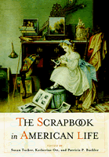

The first book about the history and practice of keeping scrapbooks
The first book about the history and practice of keeping scrapbooks


 The first book about the history and practice of keeping scrapbooks
The first book about the history and practice of keeping scrapbooks

|  |
The Scrapbook in American Lifeedited by Susan Tucker, Katherine Ott and Patricia P. Bucklerpaper EAN: 978-1-59213-478-6 (ISBN: 1-59213-478-5) |
Winner of the Allen Noble Award for best edited book from Pioneer America Society (PAS), 2006
"The honesty and openness of these lucid essays invite readers to make their own connections to the materials. Sure to appeal to collectors of scrapbooks and to those who, like myself, recall the pleasure of making them."
—David D. Hall, Harvard Divinity School
"Keeping a scrapbook" is a longstanding American tradition. The collections of fragments that often bulge their pages and burst their bindings make scrapbooks a pleasurable feast for both makers and consumers. They are a material manifestation of memory—of the compilers and of the cultural moment in which they were created. Despite the widespread popularity of scrapbooks, historians have rarely examined them in a systematic way. In this fascinating work, fourteen contributors offer the first serious, sustained examination and analysis of scrapbooks. While other books offer suggestions on how to create scrapbooks, this book looks at their significance.
The editors observe that scrapbooks are one of the most mysterious objects to be found in a family home. This unique book helps to explain the mystery. It will appeal to all readers with an interest in "scrapbooking" as well as to scholars who study American culture and print, visual, or material culture.
Excerpt available at www.temple.edu/tempress
"This compilation is very important because it brings so many different topics and approaches together.... It provides insights into ways in which scholars might be able to use scrapbooks as important historical documents."
—Georgia Barnhill, American Antiquarian Society
"The Scrapbook in American Life is an intriguing and innovative exploration of an undervalued and understudied class of artifacts. The authors of this rich anthology show how scrapbooks, diverse in form, content, purpose, and even comprehensibility, reify and preserve personal constructions of meaning in an increasingly mass-culture world. This book is an important contribution to cultural studies."
—Kenneth L. Ames, author of Death in the Dining Room and Other Tales of Victorian Culture
"'Scrapbooking' has become one of the growth industries of our time. Conventions, fancy scissors, and store-bought supplies attest to its popularity. But as The Scrapbook in American Life demonstrates, this is by no means a new phenomenon. Some men, a number of children, and lots of women made scrapbooks in the nineteenth and twentieth centuries for an almost infinite variety of reasons: the collector's itch, autobiography, learning, and the simple joy of arranging things in a telling or pleasing manner. As this excellent book suggests, scrapbooks are all about aesthetics, too—about the technique of collage which makes every woman an artist."
—Karal Ann Marling, author of Designs on the Heart: The Homemade Art of Grandma Moses
"...delightful... The 65 b&w images scattered throughout are a visual feast: a prostitute's business card, newspaper photos of FDR, late-19th-century advertising cards, paper dolls, postcards, awards, Singer sewing machine ads, Bible cards. Scholars and scrapbookers alike will enjoy these slices of social history."
—Publishers Weekly
"A wondrous, captivating book on a unique topic: the history of scrapbooking in the U.S... it is a book requiring time for in-depth reading."
—Booklist
"This is not a how-to but a 'why' book; a serious, systematic investigation of the history of an enduring tradition."
—Library Journal
"[T]he book shows that the ephemera of daily life people choose to preserve, and how they preserve it, are appropriate topics of study for historians of material culture, specialists in American literature, and indeed anyone interested in how people make meaning, memory, and identity out of transient events and materials....Highly recommended."
—Choice
"This is a useful collection....The essays provide a backdrop that illuminates continuities and divergences in scrapbooking past and present."
—Journal of Folklore Research
'The Scrapbook in American Life is a welcome addition to the research on collections people keep."
—The Journal of American History
"The Scrapbook in American Life explains how and why our ancestors pursued this enduring hobby...you’ll enjoy this look into an old-fashioned hobby - doubly so if you’re lucky enough to have your ancestor’s scrapbook."
—Family Tree Magazine
"The work begins with an excellent historical introduction...While many of the essays included in The Scrapbook in American Life could stand alone as interesting works on various historical aspects of the scrapbooking tradition, together they provide the first methodical and wide-ranging examination of a widespread but often ignored aspect of material culture. At a minimum, this work will draw scholars’ attention to these individual and social constructions of material culture."
—H-Net Reviews
"[A]n eclectic and electrifying anthology of social history...It’s a collection that serves as a testament to the ways in which individuals throughout history have captured the essence of their culture for themselves as well as for curious, kindred souls."
—The Courier-Journal
"In documenting the scrapbook’s story, from middle-class parlor tables of the nineteenth century to modern-day archival collections, the editors also pause to consider more critical questions, such as how the scrapbooks themselves ought to be read."
—Libraries & the Cultural Record
"Scrapbook compilers are as different as what they created, and this is one of the important messages of The Scrapbook in American Life…. [It] is a welcome addition to the literature of a number of areas of study."
—Winterthur Portfolio: A Journal of American Material Culture
Read an article from News Dispatch, 4 June 2006, written by Amanda Haverstick.
Acknowledgments
An Introduction to the History of Scrapbooks – Katherine Ott, Susan Tucker, and Patricia P. Buckler
PART I. Manuscripts of Learning and Knowing
1. Between Person and Profession: The Scrapbooks of Nineteenth-Century Medical Practitioners – Katherine Ott
2. Daily Life on a South Carolina Plantation, 1855-1983: A Scrapbook Memory from Three Generations of Women – Anne Sinkler Whaley LeClercq
3. Letters, Scrapbooks, and History Books: A Personalized Version of the Mexican War, 1846-48 – Patricia P. Buckler
4. History in the Making: A Columbian Exposition Scrapbook – Jennifer A. Jolly
5. Scrapbook, Wishbook, Prayerbook: Trade-Card Scrapbooks and the Missionary Work of Advertising – Ellen Gruber Garvey
6. Scrapbook Houses for Paper Dolls: Creative Expression, Aesthetic Elaboration, and Bonding in the Female World – Beverly Gordon
7. Souvenirs of Amerika: Hannah Höch's Weimar-Era Mass-Media Scrapbook – Melissa A. Johnson
PART II. Books of the Self
8. The Secret Scrapbook of a "Soiled Dove" – Carol Bowers
9. Inviting Narratives: Willa Cather's Childhood Scrapbook and My Ántonia – Jennifer L. Bradley
10. In the Hands of Children: A Photographic Essay of Images from Children's Scrapbooks – Meredith Eliassen
11. Picturing Love and Friendship: Photograph Albums and Networks of Affection in the 1860s – Sarah McNair Vosmeier
12. Telling Particular Stories: Two African American Memory Books – Susan Tucker
13. Maternal Records and Male Modernist Identities: The Family Albums of Ernest Hemingway and Christopher Isherwood – James Kelley
14. "Miss Domestic" and "Miss Enterprise": Or, How to Keep a Photograph Album – Elizabeth E. Siegel
15. Horizons: The Scrapbooks of a Small-Town, Depression-Era Preteen – L. Rebecca Johnson Melvin
Notes
About the Contributors
Index
Susan Tucker is Curator of Books and Records at the Newcomb College Center for Research on Women at Tulane University. She is the author of Telling Memories Among Southern Women: Domestic Workers in the Segregated South.
Katherine Ott is Curator in the Division of Science and Medicine at the Smithsonian's National Museum of American History. She is the author of Fevered Lives: Tuberculosis in American Culture since 1870.
Dr. Patricia P. Buckler is Professor Emerita at Purdue University, and Assistant Professor of English at Indiana University Northwest and author of five articles on scrapbooks. She is a contributor to the book American Icons. She was a 2001 Mellon Research Fellow in early American history and culture.
General Interest
American Studies
Cultural Studies
© 2015 Temple University. All Rights Reserved. This page: http://www.temple.edu/tempress/titles/1843_reg.html.